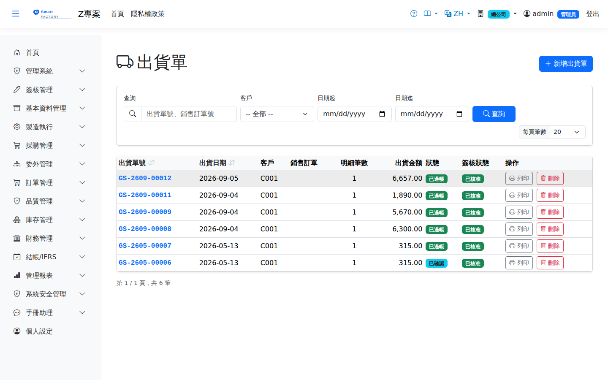

出貨單Goods Shipment
路由：/GoodsShipment | 銷售出貨與應收發票產生Route: /GoodsShipment | Sales shipment and AR invoice creation
依銷售訂單建立出貨單，倉庫揀貨出庫過帳（OUT），確認後自動產生應收發票。出庫依儲位可用量檢核，不足時擋單。A shipment is created from a sales order; the warehouse picks and issues the stock (OUT), and confirming it creates the AR invoice automatically. Issues are checked against the available quantity of the location and blocked when it is insufficient.

出貨單畫面截圖（示意，實際欄位/資料依權限與查詢條件而異）Goods shipment screenshot (illustrative; actual fields and data vary by permission and query criteria)
查詢Search
1
查詢列輸入條件後點「查詢」；欄位標題可點擊排序，清單下方有分頁導航。Enter your criteria on the query bar and click "Search"; column headers can be clicked to sort, and the paging controls sit below the list.
單據狀態Status
| 狀態Status | 說明Guide |
|---|---|
| 草稿 DraftDraft | 已建立未生效，可自由編輯、刪除；需簽核者於此狀態送審。Created but not yet effective; can be freely edited or deleted, and submitted for approval from this status. |
| 待審核Pending approval | 已送審等待簽核，不可編輯；可撤回改回草稿。Submitted and waiting for approval; it cannot be edited, but it can be withdrawn back to draft. |
| 已確認 ConfirmedConfirmed | 簽核核准（或免簽核直接確認）後生效，等待後續作業/過帳。Effective once approved (or confirmed directly when no approval is required), waiting for the next step or for posting. |
| 已過帳 PostedPosted | 庫存/帳務已入帳，單據不可再修改。Stock and accounting have been posted; the document can no longer be changed. |
| 已作廢 VoidVoid | 反向沖銷已過帳內容；作廢原因需留存，不可復原。Reverses what was posted; the void reason is kept and the action cannot be undone. |
作業流程Process
出貨Shipment
1
點「新增」選擇銷售訂單，帶出未出明細與可用庫存。Click "Add" and pick the sales order to bring in the open lines and the available stock.
2
輸入本次出貨量與出貨倉/儲位，儲存並送審/確認。Enter the quantity shipped and the shipping warehouse/location, then save and submit or confirm.
3
倉庫於「倉庫作業」完成揀貨過帳，庫存扣減。整箱出貨時掃箱號即可，出貨單面板與列印會列出「出廠箱號」。The warehouse posts the picking under Warehouse Operations, and stock is deducted. To ship whole boxes, scan the box number; the shipment panel and printout then list "Boxes shipped".
4
確認後自動產生 AR 發票，於財務模組沖收款。Once confirmed, the AR invoice is created automatically and settled in the finance module.
出貨扣掉為訂單保留的成品：生產時保留給這張訂單的成品，出貨過帳時一併扣掉保留；出貨單作廢，退回庫存的量會重新保留給原訂單（訂單明細已結案則不保留）。保留給別張訂單的成品出不掉：確認出貨（簡化模式）或倉庫揀貨時，要出的量超過「在手 − 保留給其他訂單／工單的量」會被擋下，訊息寫出可出量與保留量。儲位庫存與「選擇庫存」看不到這種保留，以這則訊息為準。Shipping uses up the goods held for the order: finished goods reserved for this sales order during production are released from the reservation when the shipment posts. If the shipment is voided, the quantity returned to stock is reserved for the order again, unless the order line is closed. Goods held for other orders cannot be shipped: when confirming (simplified mode) or picking, shipping more than "on hand − quantity reserved for other orders/work orders" is blocked, with the shippable and reserved quantities in the message. Location stock and "Select Stock" do not show this kind of reservation — go by the message.
作廢出貨前，這張出貨的應收發票要先作廢（已收款要先沖銷收款）、引用它的銷退單也要先作廢；作廢只沖回庫存與成本，不會連帶處理發票與退貨。完整倉儲模式下出貨確認時就會開立應收發票，「取消確認」前同樣要先作廢這張發票；重新確認時會依最新內容另開一張。Before voiding a shipment, void its AR invoice (reverse any receipts first) and any sales returns that reference it; voiding only reverses inventory and cost, never the invoice or the returns. In full warehouse mode the AR invoice is issued as soon as the shipment is confirmed, so void it before cancelling the confirmation; confirming again issues a new invoice from the latest content.
欄位說明Field reference
表頭Header
| 欄位Field | 說明Guide |
|---|---|
| 出貨單號Shipment No. | 系統採番，不可修改Numbered by the system; not editable |
| 出貨日期Ship Date | 必填Required 實際出貨日；決定庫存異動與收入認列的期間Actual shipment date; it determines the period of the stock movement and revenue recognition |
| 客戶Customer | 必填Required 收貨客戶Receiving customer |
| 來源銷售訂單Source Sales Order | 要出貨的銷售訂單；選定後可用「匯入」帶出該訂單未出完的明細Sales order to ship; once chosen, "Import" brings in the lines still to be shipped |
| 送貨地址Delivery Address | 本次出貨的收貨地址，預設帶客戶主檔地址，可單次覆寫Delivery address for this shipment; the customer master address is used by default and can be overridden per shipment |
| 備註Notes | 整張出貨單的補充說明Notes for the whole shipment |
明細Lines
| 欄位Field | 說明Guide |
|---|---|
| 品號Item | 必填Required 出貨的料件Item shipped |
| 來源銷售訂單Source Sales Order | 該行對應的訂單與行號，出貨後回寫該訂單行的已出貨量Order and line this row belongs to; the shipped quantity is written back to that order line |
| 出貨數量 / 單位Ship Qty / UOM | 必填Required 本次出貨數量；不可大於該訂單行的剩餘可出量。選了品號後，單位只列該品號的庫存單位與查得到換算的單位（預設庫存單位）；存檔時系統依品號主檔換算成庫存數量入帳，查不到換算的單位會擋下並說明。Quantity shipped this time; it cannot exceed the remaining shippable quantity of the order line. Once a product is chosen, the unit list shows only its stock unit and the units that convert to it (stock unit preselected); on save the system converts to the stock quantity from the product master, and a unit with no conversion is rejected with an explanation. |
| 幣別Currency | 該行的交易幣別；本幣金額依單據匯率換算而得Transaction currency of the line; the local amount is converted with the document rate |
| 單價Unit Price | 交易幣別的未稅單價，小數位數依幣別設定Price before tax in the transaction currency; decimal places follow the currency setting |
| 稅別Tax | 稅別代碼，決定稅率；改稅別會重算稅額Tax code, which determines the rate; changing it recalculates the tax |
| 未稅金額Line Amt | 數量 × 單價Quantity × unit price |
| 稅額Tax | 未稅金額 × 稅率Amount before tax × tax rate |
| 含稅總額Total | 未稅金額 ＋ 稅額，仍為Amount before tax + tax, still in 交易幣別Currency |
| 本幣金額Local Amount | 含稅總額換算為本位幣的金額（本幣＝外幣 × 匯率）；表頭合計與帳務入帳一律採本幣The tax-inclusive total converted to local currency (local = foreign × rate); header totals and accounting entries always use local currency |
| 已下架量Picked Qty | 倉庫作業實際揀貨下架的累計數量；全部下架完成後單據自動過帳Cumulative quantity actually picked by warehouse operations; the document posts automatically once everything is picked |
| 備註Notes | 該明細行的個別說明Notes for this individual line |